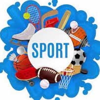

PHILOSOPHY OF SPORT
DISCUSSION LEADING
FALL 2023

9-06 Practical Matters/Overview--Philosophy & Sport(s)
9-08 Overview--Topics & Introduction--What is/are Sport(s)? Definition?
9-11 ETHICAL ISSUES IN SPORTS (Case Study?) -- QUIZ #1
9-13 Ethical Theories--Dr. L
9-15 Ethical Theories--Dr. L
9-18 SPORTS & SOCIETY (Case Study?)-- QUIZ #2--P
9-20 --P
9-22 --P
9-25 WOMEN & SPORTS (Case Study?)-- QUIZ #3--P
9-27 --P
9-29 --P
10-02 SPORTS & THE MEDIA (Case Study?)-- QUIZ #4 --P
10-04 --P
10-06 --P
10-09 SPORTS & MONEY (Case Study?)-- QUIZ #5 --P
10-11 --P
10-13 --P
10-16 SPORTS & EDUCATION (Case Study?)-- QUIZ #6 --P
10-18 --P
10-20 MIDTERM EXAM?? --P
10-23 SPORTS & GOVERNMENT/LAW & REFORM (Case Study?) -- QUIZ #7--P (UST AD)
10-25 --P
10-27 FALL BREAK--NO CLASS!
10-30 THE COSTS & BENEFITS OF PARTICIPATION IN SPORTS -- QUIZ #8 --P
11-01 --P
11-03 --P
11-06 SELF-KNOWLEDGE & SPORTS (Case Study?)-- QUIZ #9 --P
11-08 --P
11-10 --P
11-13 THE MIND & BODY IN SPORTS (Case Study?)-- QUIZ #10 --P
11-15 --P
11-17 --P
11-20 AESTHETICS & SPORTS (Case Study?)-- QUIZ #11 --P
11-22 --P
11-24 THANKSGIVING BREAK--NO CLASS!
11-27 WHAT WE DO AND WHY IN SPORTS--P-- QUIZ #12
11-29 --P
12-01 --P
12-04 SPORTS AND RELIGION-- QUIZ #13 --P
12-06 --P
12-08 --P
12-11 SPORTS AN-- FINAL TOPICS--P
12-13 --P
12-15 --P--LAST CLASS!!
12-18 STUDY MONDAY
12-19 ***FINAL EXAM??--10:30 am-12:30 pm*** OR FINAL PAPER DUE AT 11:59 PM